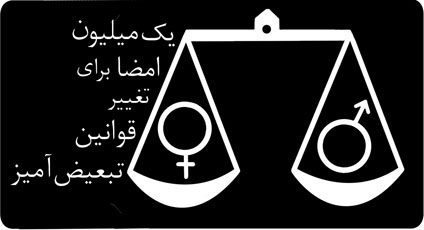
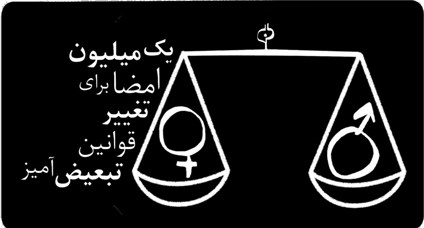
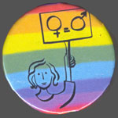
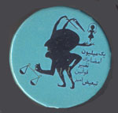
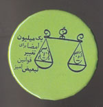
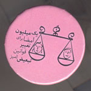
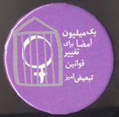
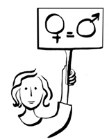
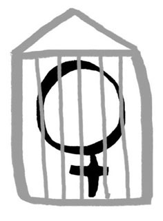
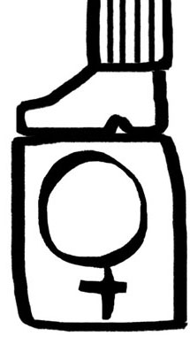

|
|

پوسترها و تبلیغات
دو شنبه23 اردیبهشت 1387
پین های(سنجاق های سینه ) تبلیغاتی کمپین یک میلیون امضا و آرم های طراحی شده برای کمپین یک میلیون امضا که توسط تارا نجد احمدی طراحی شده اند، از جمله روشهای تبلیغی برای کمپین یک میلیون امضا هستند.در صورتی که علاقه مند به استفاده از این آرم ها با کیفیت بیشتر هستید با ای میل کمیته هنری کمپین تماس بگیرید:
art.committe@gmail.com
آرم کمپین:

آرم اولیه کمپین در آغاز کار

آرم فعلی کمپین یک میلیون امضا بعد از اندکی اصلاحات
****************************************************
پین ها:





****************************************************
لوگوها:


